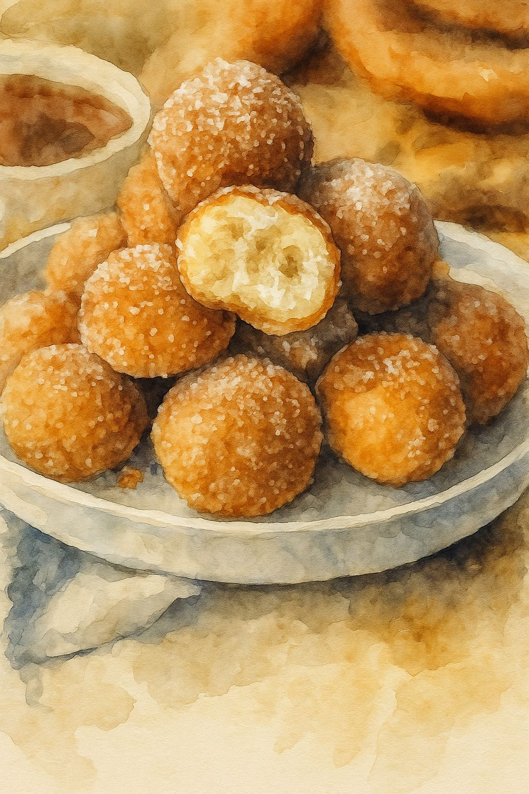

En México, la cultura del antojo es parte fundamental de nuestro día a día. Los snacks y
postres no son solo alimentos, son momentos de alegría, convivencia y tradición. Dentro
de esta gran variedad de opciones, el churro ha sido históricamente uno de los favoritos
por su sabor reconfortante y accesible. Sin embargo, en un mercado que evoluciona
constantemente, los consumidores, especialmente los jóvenes, ya no buscan solo lo
tradicional, buscan experiencias nuevas, presentaciones prácticas y sabores que puedan
personalizar a su gusto.
Bajo esta premisa nace Churro Pop’s, una propuesta innovadora ubicada en Fresnillo,
Zacatecas, que busca transformar la manera en que disfrutamos este clásico postre.
Nuestra idea rompe con el formato convencional del churro alargado para presentar
"bolitas de churro": pequeños bocados crujientes por fuera y suaves por dentro,
diseñados para ser prácticos, fáciles de comer y visualmente atractivos.